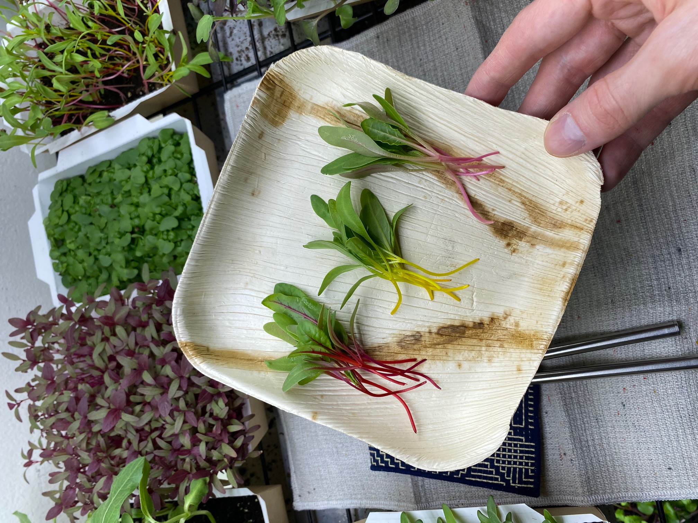
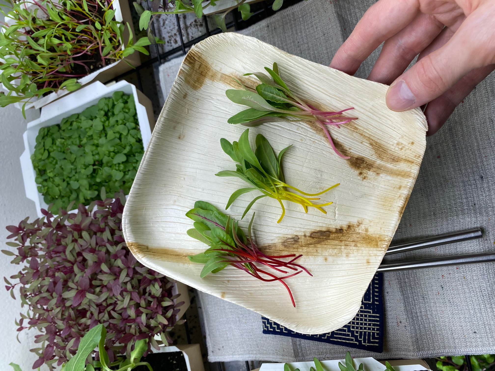

Tried & True Leaves is an urban micro-farm established by Eileen Tran and Austin Frazier in 2018. Tried & True Leaves is a leading source for organic, nutrient-rich microgreens, microherbs, edible flowers and shoots in Philadelphia.
 

↑ micro rainbow swiss chard

↑ edible flowers: marigold

↑ micro mizuna mustard
↑ micro red amaranth

↑ micro herb: basil

↑ pea shoots

↑ micro red swiss chard